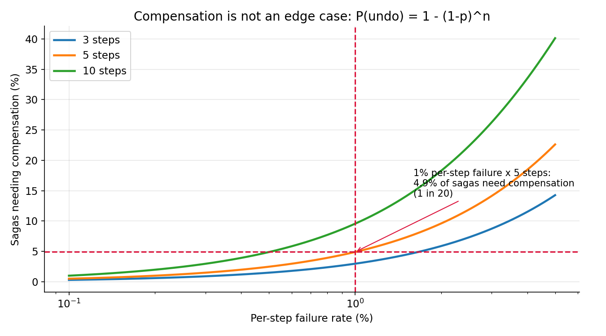
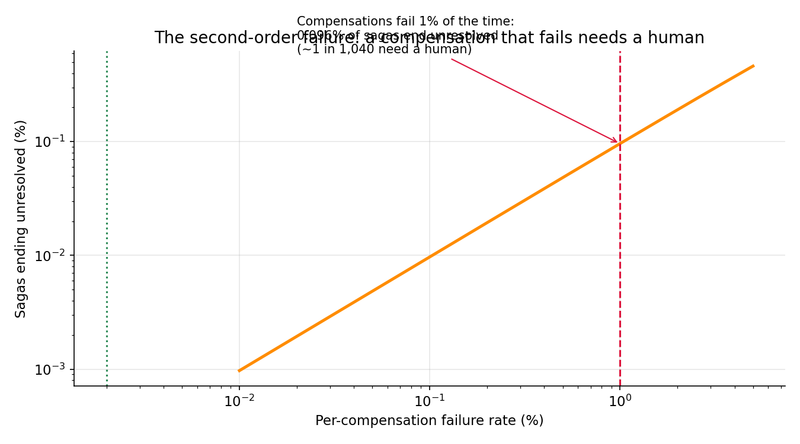
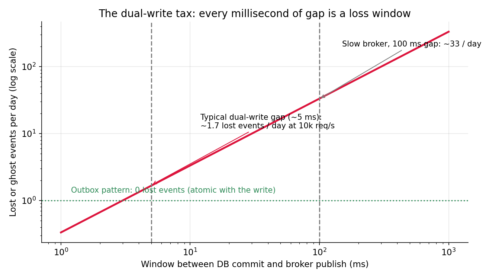
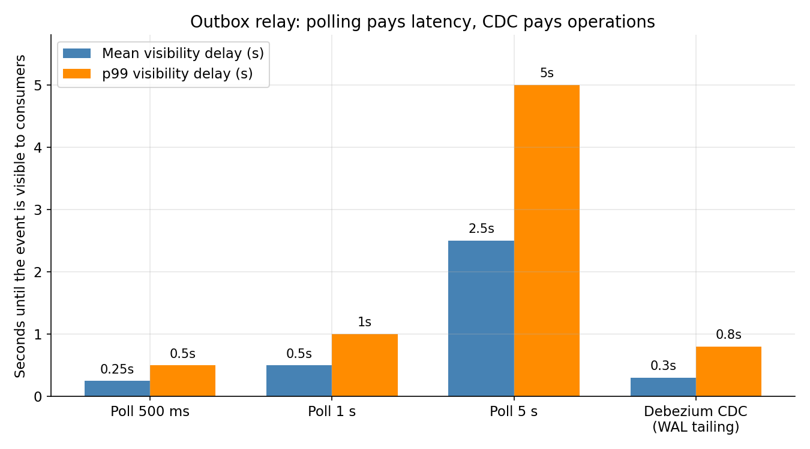

Part 3 gave you the protocol that makes several machines agree on one outcome — and showed why it blocks. This part is the escape hatch: give up the single agreement, commit step by step, and keep an undo action ready for every step. That is the saga, and the transactional outbox is the small, boring mechanism that makes sagas actually work in production.
Book a trip. One service reserves the seat, a second takes the payment, a third books the room, a fourth sends the confirmation email. The room booking fails after the payment has landed. The customer has now paid for a trip that does not exist. There is no single database transaction spanning four services, so there is no rollback. What you do instead is run the steps in reverse: refund the payment, release the seat, cancel the booking — each undo a compensating transaction, written in advance, one per step.
The benchmark hook for this part is the compensation economics, and it runs in the opposite direction from the intuition that "failure handling is an edge case." With five steps each failing 1% of the time, 4.9% of sagas run a compensation — roughly one saga in twenty. At one million multi-step jobs a day with ten steps each and a 1-in-1,000 step failure rate, that is ~10,000 sagas a day needing their undo path. And the second-order failure is the one that actually hurts: if a compensation itself fails 1% of the time, ~1 saga in 1,040 ends unresolved — sitting in a queue for a human, about 960 a day at that volume. (Part 3 quoted ~1 in 2,040; that assumed a 0.5% compensation-failure rate. The unresolved rate is exquisitely sensitive to that one number, which is exactly the point: your saga is only as reliable as its worst compensation.)
The ELI5 version
You are assembling flat-pack furniture with a friend, but you live in different houses and can only text. You agree on an order: you build the frame, your friend attaches the legs, you add the shelves, your friend tightens everything.
Halfway through, your friend texts: "the legs don't fit." In a single-database world you would both rewind time and pretend nothing happened. In the real world, the frame is already built — you cannot un-build it by wishing. So each of you agreed, before starting, on the undo for your own step: your friend unscrews the legs, you disassemble the frame, and you both end up back where you started, one undo at a time, in reverse order.
That is a saga. Three rules make it work: every step commits immediately (no locks held across services); every step has a named compensation written before the saga starts, not improvised after a failure; and every compensation is idempotent — running it twice has the same effect as running it once — because the network will redeliver, the orchestrator will restart, and your refund will be attempted twice.
How it works: local steps, durable progress, reverse-order undo
A saga is a sequence of local transactions, each atomic inside one service's own database. After each step commits, the saga records its progress in a durable log — the saga log — and triggers the next step. If a step fails, the saga walks backward, running each completed step's compensation in reverse order. The saga never blocks: a failed step is undone, locks were already released when each local transaction committed, and no participant waits on any other participant's recovery.
There are two ways to drive it:
- Orchestration. A central coordinator — a saga orchestrator, or a workflow engine like Temporal or Cadence — tells each service what to do, in order, and watches the replies. Easier to understand, monitor, and debug: when a saga fails at step 7 of 12, the operations team can see the whole state machine in one place. The coordinator is itself a stateful service, so it must persist its progress durably (a crash mid-saga is recovered by replaying the log, not by asking the services what happened).
- Choreography. No coordinator: each service listens for events and decides what to do next. The order service emits
OrderCreated; inventory hears it and reserves stock; payment hearsInventoryReservedand charges the card. Loosely coupled, no single coordination point — and much harder to debug, because the state machine exists only as the sum of every service's event handlers. A stuck choreography has no single place to look.
The choice is usually decided by one question: when a saga fails at 3 a.m., who gets paged, and can they see what happened? Production teams that have run both tend to pick orchestration for that reason. One practitioner report — 12 microservices, 8,000 distributed transactions a second — is blunt about the history: they abandoned 2PC after it caused three outages in two months, moved to orchestration-based sagas, and now run at 99.7% saga completion, a 0.3% compensation rate, 1.2 s average duration, 4.8 s p99, and a 0.002% failed-compensation rate. Those are real fleet numbers, not a benchmark — and note what they imply: at 8,200 sagas a second, a 0.3% compensation rate is still ~25 compensations a second, every second, all day. Compensation is a hot path, not an exception handler.

The curve is the argument for writing compensations first and testing them like forward steps. Every step you add is another chance to pay the undo tax: at 1% per-step failure, a 10-step saga compensates almost twice as often as a 5-step one (9.6% vs 4.9%). The practical consequences follow directly: keep sagas short, make the expensive steps late (so fewer steps need undoing when they fail), and put the step with no good compensation — "email the customer and apologize" — as far from the start as you can, because its undo is a human.
The second-order failure: when the undo fails
A saga's failure mode is not the failed step. It is the failed compensation. A step that fails cleanly is routine; a compensation that fails leaves the system in a state no protocol can resolve, and the saga lands in a dead-letter queue for a human.

Two things matter here. First, the unresolved rate is dominated by the late steps: a failure at step 5 undoes four steps, so it has four chances for a compensation to fail, while a failure at step 2 has only one. Second, the compensation-failure rate is the only number in the whole design that you fully control — and the cheapest way to move it is idempotency plus retry. A compensation that fails because the service was briefly down is not a human problem; it is a retry problem. Retry it with backoff, forever, and the only compensations that reach a human are the ones that fail deterministically: the refund API rejecting the charge, the inventory record already deleted, the seat already resold. That is why the field figure (0.002%) is two orders of magnitude below the toy 1% assumption: in production, most compensation failures are transient, and retries absorb them.
The non-obvious corollary: a compensation must be written for the world as it is when it runs, not as it was when the step ran. "Void the authorization" is correct on the day of the purchase and wrong the next day, when the card network requires a refund instead. "Increment the inventory count" is wrong if another reservation took the same units in the meantime — the compensation must release that specific reservation. These are semantic compensations, and they are where most saga bugs live: not in the happy path, and not in the retry logic, but in an undo that no longer matches the state it is undoing.
The outbox pattern: the dual-write problem, solved by deleting a write
Sagas have a second, quieter failure hiding inside every step: the step itself usually needs to do two things at once — update its own database and tell the next service. Write the row, then publish the event, and a crash between the two loses the event: the order exists but nobody ever hears about it. Publish first, then write, and a crash leaves a ghost event for an order that never existed. Two independent writes with no shared transaction cannot both be guaranteed, and the gap between them is a loss window you can measure:

The fix is to stop having two writes. The transactional outbox pattern, catalogued by Chris Richardson, folds the event into the step's own local transaction: the service inserts the business row and an outbox row in the same database transaction, and a separate relay publishes the outbox rows to the broker afterward. Either both rows exist or neither does — the database you already trust becomes the single source of truth, and everything after the commit is a retry loop.
The guarantee that buys is at-least-once delivery, not exactly-once. The relay can publish an event, crash before recording its progress, and publish the same event again after restarting. There is no version of this pattern that delivers exactly once — KIP-939, which would let Kafka participate in two-phase commit, is still under development as of October 2026 — so the consumer side must do the second half of the job: deduplicate on the event ID (generated in application code, so it survives relay restarts) and make every handler idempotent. The outbox plus an idempotent consumer is the whole pattern; either half alone is a bug.
The relay: polling is simple, CDC is fast, both cost something
Getting rows out of the outbox table has two standard implementations, and the choice is a latency-versus-operations trade:

- Polling publisher. A process queries
SELECT ... WHERE published = false, publishes, then marks the rows published — all inside one transaction, so a crash between publish and mark just republishes on the next poll. Simple, entirely application code, no extra infrastructure. The cost is latency (mean delay is half the poll interval) and database load: below roughly 200 events a second it is the right default; above that, the polling queries and theUPDATEs start competing with the business workload. - Transaction-log tailing (CDC). Debezium reads the database's own write-ahead log — the WAL in PostgreSQL, the binlog in MySQL — and publishes inserts in commit order, with no polling queries at all. Latency is usually under a second, and ordering comes free. The cost is operational: Debezium reads through a replication slot, and PostgreSQL retains every WAL segment the slot has not confirmed as read. If the connector dies for a few days and nobody notices, the WAL piles up until the primary's disk is full. Monitor the slot lag (
pg_replication_slots) and setmax_slot_wal_keep_size— the failure mode of CDC is not lost events, it is a full disk.
Either way, the outbox table needs housekeeping: published rows must be deleted or archived, or the table grows without bound. Debezium's Outbox Event Router treats the table as insert-only and filters out deletes automatically; a polling relay has to do its own cleanup.
Saga vs 2PC: the honest trade
Part 3 ended with the comparison table. Here is the same trade with the outbox folded in, because the outbox is what makes the saga column livable:
| Two-phase commit | Saga + outbox | |
|---|---|---|
| Guarantee | Atomic: all commit or all abort, no visible in-between | Eventually consistent: intermediate states are visible to readers |
| Failure mode | Blocking: coordinator crash strands participants in doubt, locks held | Unresolved: a compensation that fails needs a human (~1 in 1,040 at 1% comp failure) |
| How often it bites | ~20 in-doubt txns/yr at 10k txn/s (2 ms window, 1-yr MTBF) | ~1 saga in 20 compensates (5 steps, 1% step failure); ~25 compensations/s at 8,200 tx/s in the field |
| Cross-service event loss | N/A — the protocol is the delivery | Dual-write loses ~1.7 events/day per 5 ms gap at 10k req/s; outbox makes it zero |
| Latency cost | 2 RTT + 2 log writes per commit (162 ms cross-region) | One local commit per step; event visible after relay (0.25–2.5 s polling, ~0.3 s CDC) |
| When to use it | You control all the databases and need strict atomicity | Independent services, compensations you can write, readers that tolerate in-between states |
The decision ladder from Part 3 still holds, with one rung added: if the data can live in one database, keep it there. If it is one logical database spread over nodes, use a distributed SQL database and let it run the commit protocol. If it is two different systems run by one team at low volume, XA/2PC is fine. If it is independent services, use a saga — and the moment a step has to notify another service, write the event into the outbox in the same transaction, or the saga's first failure will be a lost event nobody can explain.
Why it breaks
The missing compensation is the failure that ships. Every step has a forward action that gets written, tested, and demoed. The compensation gets written last, tested never, and discovered missing the first time the step fails in production — which, at 4.9% of sagas, is the first week. The operational rule is to test compensations the way you test forward steps: run the saga, kill a step on purpose, and assert the system returns to the state it started in. Chaos testing for sagas is not a nice-to-have; it is the only way the undo path ever gets exercised before a customer does it for you.
The non-idempotent compensation is the failure that double-charges. At-least-once delivery means every compensation will eventually run twice. A refund that is not idempotent refunds twice; an inventory release that is not idempotent releases stock that was never reserved. The signal is a reconciliation report that never quite balances, and the fix is to key every compensation on the same event ID the forward step used, so the second run is a no-op. Idempotency is not a property of the saga framework. It is a property of each compensation, written by hand, one at a time.
The unreadable in-between state is the failure your readers hit. A saga's intermediate states are visible: the payment is taken, the room is not yet booked, and a reader querying in that window sees a trip that is half-built. If your UI, your reports, or your downstream services assume a saga is either done or not started, they will show a customer a charge with no booking — and the customer will call support before the compensation runs. The fix is to design the read path for in-between states: mark the order PENDING, hide it from the customer-facing list until the saga completes, and treat "saga in progress" as a first-class status, not an error.
The unmonitored outbox is the failure that fills a disk. CDC's replication slot and the polling relay's backlog are both silent until they are not: slot lag grows, the outbox table grows, and the first symptom is either a full disk or events arriving hours late. Alert on outbox age — any row older than a minute is a stuck relay — and on slot lag, the same way Part 3 said to alert on in-doubt transactions. The outbox is infrastructure now; monitor it like infrastructure.
Takeaways
- A saga is a sequence of already-committed local transactions, each with a compensating action written in advance; a failed step is undone in reverse order, and nothing ever blocks.
- Compensation is a hot path, not an edge case: 4.9% of 5-step sagas compensate at 1% per-step failure; at 1M jobs a day, ~10,000 sagas a day run their undo path.
- The second-order failure is the one that needs a human: ~1 saga in 1,040 ends unresolved at a 1% compensation-failure rate — and that rate is the only number in the design you fully control, via idempotency and infinite retry of transient failures.
- Field numbers from a 12-service fleet at 8,000 tx/s: 99.7% completion, 0.3% compensation rate, 1.2 s average, 4.8 s p99, 0.002% failed compensation — after 2PC caused three outages in two months.
- The dual-write problem is a measured loss window: a 5 ms gap between commit and publish loses ~1.7 events a day at 10k req/s. The outbox deletes the second write — event and business row commit atomically — and delivers at-least-once.
- At-least-once means duplicates: consumers deduplicate on the application-generated event ID, and every handler must be idempotent.
- Relay choice is latency versus operations: polling is simple below ~200 events/s (mean delay half the interval); Debezium CDC lands in ~0.3 s but a dead replication slot can fill the primary's disk — monitor slot lag and outbox age.
- Orchestration beats choreography when a saga fails at 3 a.m. — because someone has to see the whole state machine in one place.
Next in Season 2: Part 5 — Backpressure & load shedding: what happens when the system says no on purpose. Follow on dev.to for the next part.